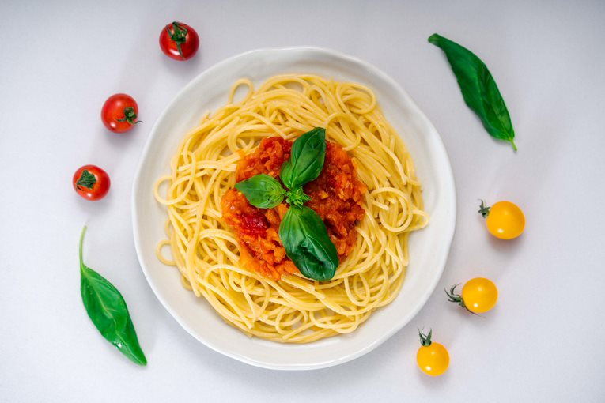

Tomato Pasta Sauce

How to make Tomato Sauce Spaghetti
Now, the Italians are famous for being particular about their foods, and I am quite sure that many of them would think little of this particular pasta sauce recipe. I, however, think it is rather delicious, and I certainly hope that you do, too!
This dish is the definition of a shortcut - most of the preparation process is taken care of for us thanks to the modern miracle of the food processor!
Ingredients
- Half a large onion (or one medium onion [or two small onions {or three or more really very tiny onions}])
- A carrot
- 1 clove of garlic
- A 400ml can of chopped tomatoes
- 1 tsp vegetable bouillon
- 2 tbsp olive oil (for frying)
- Salt and pepper to taste
Method
- Roughly chop your onion, garlic and carrot, and add to the food processor. Blitz for ten or so seconds, until chopped up finely.
- Heat olive oil in a saucepan over a medium-low heat. Add vegetable mix, and fry gently until soft, stirring occasionally.
- Once softened, add the canned tomatoes and bouillon. Stir to mix, and simmer gently for fifteen minutes.
- Season with salt and pepper to taste, then serve on a nest of delicious spaghetti.